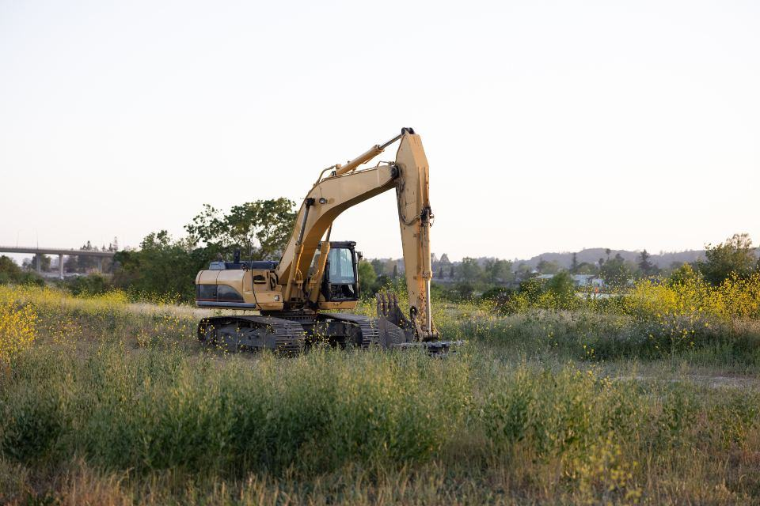
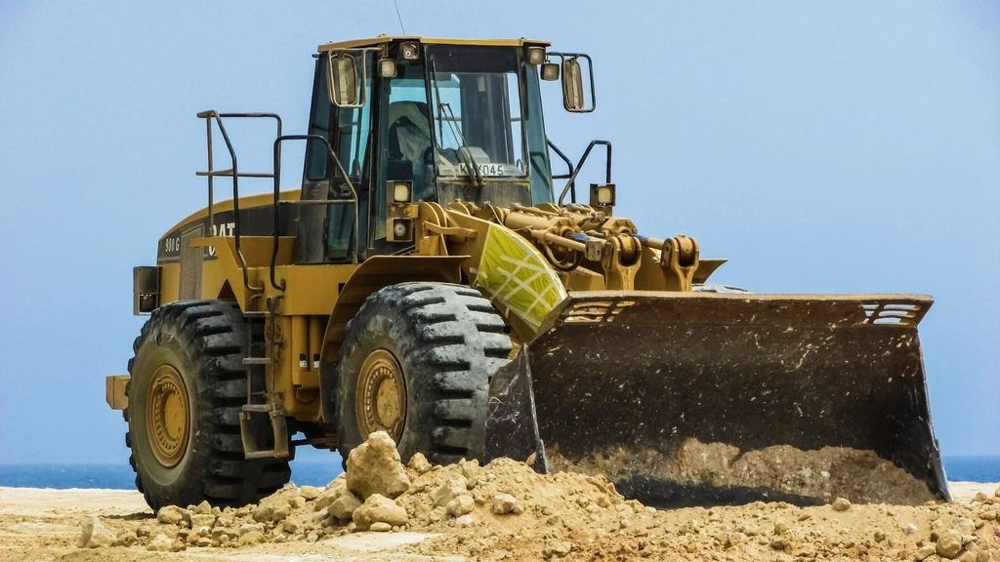

Färre maskiner som gör mer
Med drifttidsdata från varje maskin ser vi vilka som står oanvända. I genomsnitt har våra kunder minskat antalet maskiner med elva procent det första avtalsåret. Alla dieselmaskiner tankas med HVO100, och 38 truckar och två lastare är nu eldrivna.
Färre maskiner som gör mer
Med drifttidsdata från varje maskin ser vi vilka som står oanvända. I genomsnitt har våra kunder minskat antalet maskiner med elva procent det första avtalsåret. Alla dieselmaskiner tankas med HVO100, och 38 truckar och två lastare är nu eldrivna.
- 11 %färre maskiner efter första året
- 40eldrivna maskiner i parken
- HVO100i alla dieselmaskiner

Certifierade för industrimiljö
- ISO 9001 och 14001Certifierat ledningssystem för kvalitet och miljö sedan 2006.
- ISO 45001Arbetsmiljöledning certifierad sedan 2019 – teknikerna arbetar i kundernas riskmiljöer varje dag.
- Besiktning av truckar och lyftÅterkommande besiktning av truckar, teleskoplastare och lyftredskap av ackrediterat kontrollorgan.
- Heta arbeten och kollektivavtalAlla tekniker har certifikat för heta arbeten, och vi har kollektivavtal med IF Metall.
Servicetekniker med egen verkstadsbil
Du får en fullutrustad verkstadsbil, egen kundportfölj och arbetar självständigt med maskiner som du lär känna under flera år. Kollektivavtal med IF Metall, beredskapsersättning och tydlig väg till specialisttjänst inom hydraulik eller elsystem.